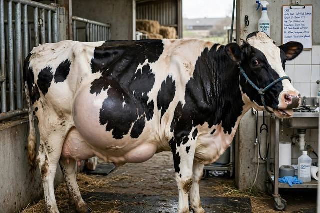
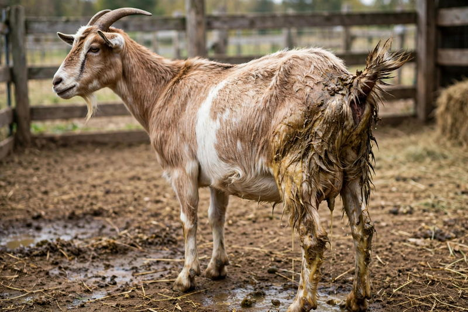
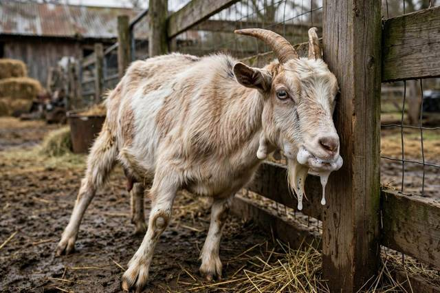

Enterotoxaemia, also called pulpy kidney disease, is a sudden and often fatal disease of goats and sheep. It is caused by a toxin produced by a normal gut bacterium that multiplies rapidly when the diet changes suddenly.
In Pakistan, enterotoxaemia (انٹروٹاکسیمیا) is a well-known cause of sudden death in well-fed goats, especially after a move to lush pasture or a sudden increase in grain feeding. It occurs worldwide wherever goats are kept on rich diets.
On this page: the cause, animals affected, clinical signs, diagnosis, treatment principles and prevention.
Cause
The disease is caused by Clostridium perfringens type D, a bacterium normally present in small numbers in the gut. When an animal suddenly eats large amounts of grain or lush green fodder, the bacterium multiplies quickly and releases epsilon toxin, which is absorbed into the bloodstream and damages the brain, lungs and kidneys.
Pathogenesis
Clostridium perfringens type D normally lives in small numbers in the gut. When a goat suddenly eats large amounts of grain, concentrate or lush green fodder, undigested starch reaches the intestine and the bacteria multiply explosively, producing large amounts of epsilon toxin.
The toxin is absorbed through the gut wall into the bloodstream and damages the lining of small blood vessels, especially in the brain, lungs and kidneys. Fluid leaks into the lungs and around the heart, and areas of the brain are starved of oxygen, causing the nervous signs — blindness, convulsions and paddling. The course is so rapid that animals are often found dead with no warning. After death the kidneys soften very quickly, giving the “pulpy kidney” that gives the disease its common name.
Animals Affected
Goats and sheep are affected, especially well-fed young animals and kids. Often the best-conditioned animals in the flock die first. Animals on poor diets are rarely affected.
Clinical Signs
1
Sudden death without any warning signs(The most common presentation)
2
Dullness(Standing dull and quiet)
3
Loss of appetite(Refusing to eat)
4
Reluctance to move(Unwilling to walk)
5
Abdominal pain and bloating(Painful, swollen belly)
6
Diarrhoea, sometimes with blood(Loose faeces, sometimes bloody)
7
Staggering and head pressing(Nervous signs)
8
Convulsions and frothing at the mouth(Fits with froth at the mouth)
9
Death within hours of the first signs(Rapidly fatal once signs appear)
Sudden deathDullnessLoss of appetiteReluctance to move

Abdominal pain and bloating

Diarrhoea

Staggering and head pressingConvulsions and frothingDeath within hours
Diagnosis
Diagnosis is based on the history (sudden diet change, sudden deaths in well-fed animals), clinical signs and post-mortem findings. The kidneys soften very quickly after death (the “pulpy kidney”), but this alone is not proof of the disease. Laboratory detection of epsilon toxin in gut contents supports the diagnosis.
Differential Diagnosis
Sudden death and nervous signs in well-fed goats have several causes:
Tetanus — sustained rigidity and lockjaw with a history of a wound; the course is slower than enterotoxaemia.
Blackleg (black quarter) — sudden death with hot, crackling muscle swellings; mainly a disease of cattle and young stock.
Ruminal bloat — a grossly distended left flank with distress, but no convulsions or blindness.
Poisoning (for example urea or plant poisoning) — sudden nervous signs, with a history of access to a poison and often several animals affected at once.
Treatment
Once signs appear, treatment is usually too late. In early cases a veterinarian may give antitoxin and supportive care. Because the disease kills so quickly, prevention — not treatment — is the real answer.
Recommended Medicines
1
Antitoxin – Enterotoxaemia antitoxin(To neutralise the toxin in early cases)As prescribed by a veterinarian
2
NSAID – Meloxicam(For abdominal pain)0.5–1 mg/kg IV/SC once (goats)
3
Fluid therapy – Oral electrolytes / IV fluids(To correct dehydration)As prescribed by a veterinarian
⚠ Important Tips:
Treatment is usually too late once signs appear — prevention by vaccination is the real answer.
Introduce grain and lush fodder gradually, never suddenly.
Use medicines only under veterinary advice.
Vaccinate before moving animals to rich pasture, and give annual boosters.
Vaccination — follow the vet’s scheduleInjection — vet-administered only
Prevention
Vaccinate the flock with clostridial (enterotoxaemia) vaccine — kids need a primary course with a booster, and adults need annual boosters, following the livestock department’s schedule
Introduce grain and lush fodder gradually, never suddenly
Avoid overfeeding concentrates
Vaccinate before moving animals to rich pasture
Keep feeding routines steady
Key Takeaway
Enterotoxaemia kills without warning, but it is almost entirely preventable by regular vaccination and gradual diet changes.
Keep herd health records, consult a qualified veterinarian and follow the animal-health authority's current guidance for your region.
References
Standard veterinary references consulted for this guide:
MSD Veterinary Manual
Radostits et al., Veterinary Medicine: A Textbook of the Diseases of Cattle, Horses, Sheep, Pigs and Goats
WOAH Manual of Diagnostic Tests and Vaccines for Terrestrial Animals
FAO animal health manuals
Frequently Asked Questions
What are the symptoms of enterotoxaemia in goats?
Sudden death without any warning signs is the most common presentation. Other signs include dullness, loss of appetite, abdominal pain, bloating, diarrhoea, and nervous signs such as staggering, head pressing and convulsions. Death can occur within hours of the first signs.
What causes enterotoxaemia in goats?
Enterotoxaemia is caused by Clostridium perfringens type D, a bacterium normally present in small numbers in the gut. When an animal suddenly eats large amounts of grain or lush green fodder, the bacterium multiplies quickly and releases epsilon toxin.
Why do the healthiest goats die of enterotoxaemia?
Well-fed young animals and kids are most often affected, and often the best-conditioned animals in the flock die first. Animals on poor diets are rarely affected.
How is enterotoxaemia in goats treated?
Once signs appear, treatment is usually too late. In early cases a veterinarian may give antitoxin and supportive care. Because the disease kills so quickly, prevention, not treatment, is the real answer.
How can enterotoxaemia in goats be prevented?
Vaccinate the flock with clostridial (enterotoxaemia) vaccine, following the livestock department's schedule. Introduce grain and lush fodder gradually, never suddenly, and avoid overfeeding concentrates.
Why did my healthy goat die suddenly?
Enterotoxaemia often kills well-fed young goats suddenly, without any warning signs, after a sudden change to grain or lush fodder. It is almost entirely preventable by regular vaccination and gradual diet changes.
What is enterotoxaemia vaccine for goats?
Clostridial (enterotoxaemia) vaccine protects the flock. Kids need a primary course with a booster, and adults need annual boosters, following the livestock department's schedule.
صحت مند بکری اچانک کیوں مر جاتی ہے؟
انٹروٹاکسیمیا میں اچانک خوراک بدلنے سے آنتوں کا بیکٹیریا تیزی سے بڑھ کر زہر بناتا ہے، اور اکثر صحت مند بکریاں بغیر کسی علامت کے مر جاتی ہیں۔ باقاعدہ ویکسین اور خوراک میں آہستہ تبدیلی ہی بچاؤ ہے۔
اردو خلاصہ — کسانوں کے لیے آسان الفاظ میں
یہ بیماری کیا ہے؟
یہ بیماری آنتوں کے ایک جراثیم کے زہر سے ہوتی ہے، جو خوراک اچانک بدلنے یا زیادہ دانہ کھانے سے تیزی سے بڑھتا ہے۔ یہ اکثر بغیر علامت کے اچانک موت دیتی ہے۔
اہم علامات
بغیر کسی انتباہ کے اچانک موت
سستی اور بھوک ختم
چلنے سے انکار
پیٹ درد اور افارہ
دست، کبھی خون کے ساتھ
لڑکھڑاہٹ اور سر دیوار سے لگانا
فوری علاج اور احتیاط
علامات ظاہر ہونے کے بعد علاج عام طور پر دیر ہو چکی ہوتی ہے، اس لیے ویکسین ہی اصل حل ہے
پورے ریوڑ کو انٹروٹوکسیمیا ویکسین مقررہ شیڈول سے لگوائیں
دانہ اور ہرا چارہ ہمیشہ آہستہ آہستہ بڑھائیں، اچانک نہ بدلیں
دانہ ضرورت سے زیادہ نہ کھلائیں اور کھلانے کا وقت مقرر رکھیں
درست تشخیص اور خوراک کے لیے اپنے ویٹرنری ڈاکٹر سے رابطہ کریں۔
✍️ Written by Dr. Shahid Bilal Depal, DVM (PVMC RVMP #15068)
This guide is for educational purposes. Consult a registered veterinarian for diagnosis and treatment.